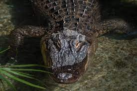
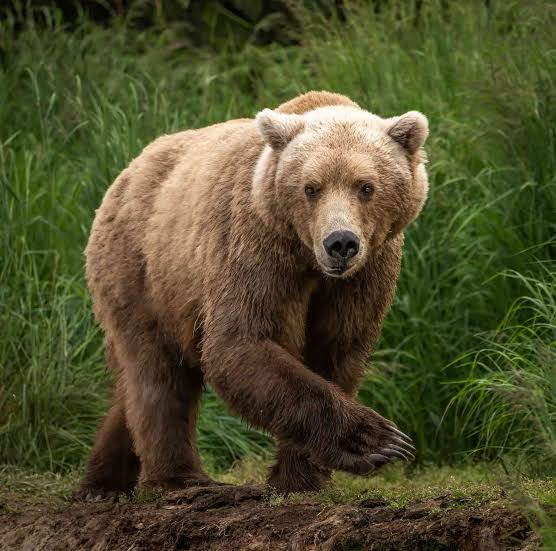

list of animals

The American alligator is a large crocodilian with an armored body, short legs, a muscular tail and a long, rounded snou

Bears are carnivoran mammals of the family Ursidae They are classified as caniforms, or doglike carnivorans.

The giraffe is a large African hoofed mammal belonging to the genus Giraffa. It is the tallest living terrestrial animal and the largest ruminant on Earth

The lion (Panthera leo) is a large cat of the genus Panthera native to Africa and India

As apes have emerged in the monkey group as sister of the old world monkeys, characteristics that describe monkeys are generally shared by apes as well